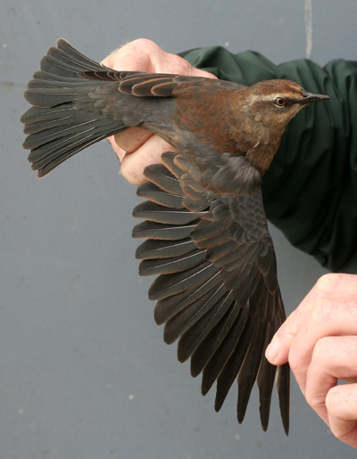

| These photographs accompany records that have been recently submitted to the committee. This record
has been ACCEPTED.  Rusty Blackbird Euphagus carolinus 31 October 2006, Southeast Farallon Island, SF 2007-043 © 2006 Jenny Erbis Back to CBRC Rare Bird Photos |